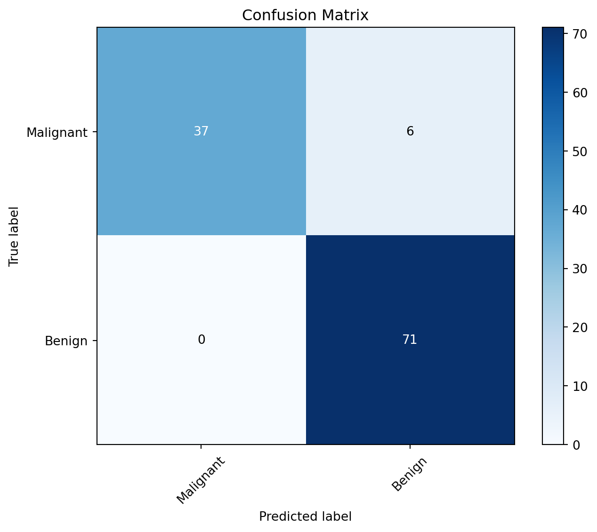

# Import necessary libraries
import numpy as np
import matplotlib.pyplot as plt
from sklearn.datasets import load_breast_cancer
from sklearn.model_selection import train_test_split
from sklearn.svm import SVC
from sklearn.ensemble import RandomForestClassifier
from sklearn.neighbors import KNeighborsClassifier
from sklearn.metrics import confusion_matrix, classification_report, roc_curve, auc, precision_recall_curve, average_precision_scoreUnderstanding Classification Evaluation Metrics in Machine Learning
Classification in machine learning is a type of supervised learning where the goal is to predict the categorical class labels of new instances based on past observations. The primary objective is to learn a mapping from input features to predefined output classes. This process involves training a model on a labeled dataset, where each data point is associated with a known class label.
In classification, the algorithm learns to assign a label or category to input data based on its features. The output is a discrete class label, making it different from regression, where the goal is to predict a continuous numeric value. ### Common Applications of Classification Algorithms: 1. Email Spam Detection: Classify emails as either spam or not spam. 2. Image Recognition: Identify objects or patterns in images, such as recognizing digits in handwritten characters or detecting specific objects in photos. 3. Medical Diagnosis: Predict whether a patient has a particular disease based on symptoms and medical test results. 4. Credit Scoring: Assess the creditworthiness of an individual based on financial and personal information. 5. Fraud Detection: Identify fraudulent transactions in financial transactions or online activities.
How Classification Models Work:
- Training Phase: The model is trained on a labeled dataset, learning the relationships between input features and their corresponding class labels.
- Testing Phase: The trained model is then tested on new, unseen data to evaluate its ability to generalize and make accurate predictions.
- Prediction: Once trained, the model can be used to predict the class labels of new instances by applying the learned patterns.
In the context of classification, the performance of a model is crucial, and various evaluation metrics, such as ROC curves, Precision-Recall curves, and Confusion Matrix, help assess how well a model is performing and where improvements may be needed. In the following sections, we’ll delve into these metrics and their significance in evaluating classification models.
Importance of Performance Metrics in Evaluating Classification Models:
Evaluating the performance of classification models is crucial for assessing their reliability and effectiveness in real-world applications. Performance metrics provide a quantitative measure of how well a model is making predictions, helping data scientists and practitioners make informed decisions about model deployment and improvement.
Introduction to ROC Curve, Precision-Recall Curve, and Confusion Matrix:
- ROC Curve (Receiver Operating Characteristic):
- The ROC curve is a graphical representation of a model’s ability to distinguish between two classes.
- It plots the True Positive Rate (Sensitivity) against the False Positive Rate at various threshold settings.
- A model with a higher area under the ROC curve (AUC-ROC) is considered better at distinguishing between positive and negative instances.
- Precision-Recall Curve:
- The Precision-Recall curve illustrates the trade-off between precision (positive predictive value) and recall (sensitivity) for different threshold settings.
- It is particularly useful when dealing with imbalanced datasets, where one class significantly outnumbers the other.
- The area under the Precision-Recall curve (AUC-PR) quantifies the model’s performance, with a higher AUC-PR indicating better precision and recall balance.
- Confusion Matrix:
- The Confusion Matrix is a table that summarizes the performance of a classification algorithm.
- It includes four components:
- True Positive (TP):
- Definition: Instances that are actually positive and correctly predicted as positive.
- Interpretation: The model correctly identified positive instances.
- True Positive (TP):
- True Negative (TN):
- Definition: Instances that are actually negative and correctly predicted as negative.
- Interpretation: The model correctly identified negative instances.
- True Negative (TN):
- False Positive (FP):
- Definition: Instances that are actually negative but incorrectly predicted as positive.
- Interpretation: The model made a false positive prediction, indicating a type I error.
- False Positive (FP):
- False Negative (FN):
- Definition: Instances that are actually positive but incorrectly predicted as negative.
- Interpretation: The model made a false negative prediction, indicating a type II error.
- False Negative (FN):
The Confusion Matrix provides a detailed breakdown of prediction outcomes and serves as the foundation for calculating various metrics like accuracy, precision, recall, and F1 score.
Different Scenarios Where Each Metric is Useful:
- ROC Curve:
- Useful when the balance between True Positive Rate and False Positive Rate is critical.
- Appropriate for scenarios where the cost of false positives and false negatives is roughly equal.
- Precision-Recall Curve:
- Particularly beneficial when dealing with imbalanced datasets.
- Useful when the focus is on minimizing false positives and maximizing true positives.
- Confusion Matrix:
- Provides a detailed breakdown of different types of model predictions.
- Useful when understanding the specific errors a model is making is important.
In the next sections, we’ll delve deeper into the interpretation of ROC and PR curves, as well as the components and applications of the Confusion Matrix. Additionally, we’ll provide Python code for generating these metrics and discuss their application in real-world examples of classification evaluation.
Interpretation of ROC and PR Curves
Explanation of ROC Curve and Its Components:
The Receiver Operating Characteristic (ROC) curve is a graphical representation of a classification model’s ability to discriminate between positive and negative classes. It is created by plotting the True Positive Rate (Sensitivity) against the False Positive Rate at various threshold settings.
True Positive Rate (Sensitivity): The proportion of actual positive instances correctly classified as positive. It is calculated as $ $.
False Positive Rate: The proportion of actual negative instances incorrectly classified as positive. It is calculated as $ $.
Interpretation of ROC Curve:
- The ROC curve helps visualize the trade-off between sensitivity and specificity at different classification thresholds.
- A diagonal line (the line of no-discrimination) represents a random classifier, while a curve above the diagonal indicates a better-than-random classifier.
- The Area Under the ROC Curve (AUC-ROC) summarizes the performance of the model, with a higher AUC indicating better discrimination. ### Interpretation of Precision-Recall Curve and Its Components: The Precision-Recall (PR) curve illustrates the trade-off between precision (positive predictive value) and recall (sensitivity) at different classification thresholds.
- Precision: The proportion of predicted positives that are true positives. It is calculated as \(\frac{\text{TP}}{\text{TP} + \text{FP}}\)
- Recall: The proportion of actual positives that are correctly classified as positive. It is calculated as \(\frac{\text{TP}}{\text{TP} + \text{FN}}\). ### Trade-offs between ROC and PR Curves:
- ROC curves are insensitive to class imbalance and may provide an optimistic view of model performance when the negative class dominates.
- PR curves are more informative for imbalanced datasets as they focus on the positive class.
Significance of Evaluating Model Performance:
Evaluating the performance of classification models is a critical step in the machine learning workflow. It allows us to assess how well a model generalizes to new, unseen data and whether it meets the requirements of the specific problem it is designed to solve. Without proper evaluation, deploying a model in real-world applications can lead to unreliable predictions and potential negative consequences.
Impact of Inaccurate Predictions in Real-World Applications:
Healthcare: Inaccurate predictions in medical diagnosis could result in incorrect treatments or delays in necessary interventions, impacting patient outcomes.
Finance: In credit scoring, misclassifying a creditworthy individual as high risk or vice versa may lead to financial losses for lenders or unfair denial of credit to deserving individuals.
Security: In fraud detection, failing to identify fraudulent activities can result in financial losses and damage to the reputation of financial institutions.
Autonomous Vehicles: In autonomous driving, misclassifying objects on the road may lead to accidents or unsafe driving conditions.
Need for a Comprehensive Understanding of Model Behavior:
Model Bias and Fairness: Evaluation helps identify biases in models, ensuring fairness and preventing discrimination against certain groups.
Generalization: Evaluating on diverse datasets helps ensure that the model generalizes well to various scenarios and doesn’t overfit to specific patterns in the training data.
Model Selection: Comparison of multiple models allows the selection of the most suitable one for the task at hand.
Let’s consider a binary classification scenario using the Breast Cancer Wisconsin dataset, available in scikit-learn. We’ll use three different classifiers for demonstration:
Python Code for Generating ROC Curves, PR Curves, and Confusion Matrix
Let’s use the Breast Cancer Wisconsin dataset for this example. We’ll showcase Python code to generate ROC curves, Precision-Recall curves, and a Confusion Matrix using scikit-learn and matplotlib. This code does the following: 1. Trains classifiers. 2. Generate and plot the ROC Curve with AUC value. 3. Generate and plot the Precision-Recall Curve with average precision (AP) value. 4. Generate and plot the Confusion Matrix as a heatmap.
The three subplots show the ROC Curve, Precision-Recall Curve, and Confusion Matrix, providing a comprehensive evaluation of three different classifiers on the Breast Cancer dataset.
1) Suuport Vector Classifier :
# Load the Breast Cancer dataset
data = load_breast_cancer()
X = data.data
y = data.target
# Split the data into training and testing sets
X_train, X_test, y_train, y_test = train_test_split(X, y, test_size=0.2, random_state=42)
# Train a Support Vector Machine classifier
model = SVC(probability=True)
model.fit(X_train, y_train)
# Evaluate the model
y_pred = model.predict(X_test)
conf_matrix = confusion_matrix(y_test, y_pred)
# Plot Confusion Matrix
plt.figure(figsize=(8, 6))
plt.imshow(conf_matrix, interpolation='nearest', cmap=plt.cm.Blues)
plt.title('Confusion Matrix')
plt.colorbar()
classes = ['Malignant', 'Benign']
tick_marks = np.arange(len(classes))
plt.xticks(tick_marks, classes, rotation=45)
plt.yticks(tick_marks, classes)
for i in range(len(classes)):
for j in range(len(classes)):
plt.text(j, i, str(conf_matrix[i, j]), ha='center', va='center', color='white' if conf_matrix[i, j] > conf_matrix.max() / 2 else 'black')
plt.xlabel('Predicted label')
plt.ylabel('True label')
plt.show()
# Print Classification Report
print("Classification Report:\n", classification_report(y_test, y_pred))Classification Report:
precision recall f1-score support
0 1.00 0.86 0.92 43
1 0.92 1.00 0.96 71
accuracy 0.95 114
macro avg 0.96 0.93 0.94 114
weighted avg 0.95 0.95 0.95 114
This example demonstrates the importance of evaluating a Support Vector Machine classifier on the Breast Cancer dataset, including the visualization of the Confusion Matrix and the classification report. The evaluation metrics provide insights into how well the model performs and where it may need improvements.
# Predict probabilities for positive class
y_scores = model.predict_proba(X_test)[:, 1]
# Generate ROC Curve
fpr, tpr, _ = roc_curve(y_test, y_scores)
roc_auc = auc(fpr, tpr)
# Generate Precision-Recall Curve
precision, recall, _ = precision_recall_curve(y_test, y_scores)
average_precision = average_precision_score(y_test, y_scores)
# Plot ROC and PR Curves
plt.figure(figsize=(12, 4))
# ROC Curve
plt.subplot(1, 2, 1)
plt.plot(fpr, tpr, color='darkorange', lw=2, label=f'ROC Curve (AUC = {roc_auc:.2f})')
plt.plot([0, 1], [0, 1], color='navy', lw=2, linestyle='--')
plt.xlabel('False Positive Rate')
plt.ylabel('True Positive Rate')
plt.title('Receiver Operating Characteristic (ROC) Curve')
plt.legend(loc='lower right')
# PR Curve
plt.subplot(1, 2, 2)
plt.step(recall, precision, color='b', alpha=0.2, where='post')
plt.fill_between(recall, precision, step='post', alpha=0.2, color='b')
plt.xlabel('Recall')
plt.ylabel('Precision')
plt.title(f'Precision-Recall Curve (AP = {average_precision:.2f})')
plt.tight_layout()
plt.show()2) Random Forest Classifier
# Load the Breast Cancer dataset
data = load_breast_cancer()
X = data.data
y = data.target
# Split the data into training and testing sets
X_train, X_test, y_train, y_test = train_test_split(X, y, test_size=0.2, random_state=42)
# Random Forest Classifier
rf_model = RandomForestClassifier(n_estimators=100, random_state=42)
rf_model.fit(X_train, y_train)
# Evaluate Random Forest model
rf_y_pred = rf_model.predict(X_test)
rf_conf_matrix = confusion_matrix(y_test, rf_y_pred)
# Plot Confusion Matrix for Random Forest
plt.figure(figsize=(8, 6))
plt.imshow(rf_conf_matrix, interpolation='nearest', cmap=plt.cm.Blues)
plt.title('Random Forest Confusion Matrix')
plt.colorbar()
classes = ['Malignant', 'Benign']
tick_marks = np.arange(len(classes))
plt.xticks(tick_marks, classes, rotation=45)
plt.yticks(tick_marks, classes)
for i in range(len(classes)):
for j in range(len(classes)):
plt.text(j, i, str(rf_conf_matrix[i, j]), ha='center', va='center', color='white' if rf_conf_matrix[i, j] > rf_conf_matrix.max() / 2 else 'black')
plt.xlabel('Predicted label')
plt.ylabel('True label')
plt.show()# Print Classification Report for Random Forest
print("Random Forest Classification Report:\n", classification_report(y_test, rf_y_pred))Random Forest Classification Report:
precision recall f1-score support
0 0.98 0.93 0.95 43
1 0.96 0.99 0.97 71
accuracy 0.96 114
macro avg 0.97 0.96 0.96 114
weighted avg 0.97 0.96 0.96 114
This example demonstrates the importance of evaluating a Random Forest classifier on the Breast Cancer dataset, including the visualization of the Confusion Matrix and the classification report. The evaluation metrics provide insights into how well the model performs and where it may need improvements.
# Random Forest ROC Curve
rf_y_scores = rf_model.predict_proba(X_test)[:, 1]
rf_fpr, rf_tpr, _ = roc_curve(y_test, rf_y_scores)
rf_roc_auc = auc(rf_fpr, rf_tpr)
# Random Forest Precision-Recall Curve
rf_precision, rf_recall, _ = precision_recall_curve(y_test, rf_y_scores)
rf_average_precision = average_precision_score(y_test, rf_y_scores)# Plot ROC and PR Curves
plt.figure(figsize=(12, 4))
# ROC Curve
plt.subplot(1, 2, 1)
plt.plot(rf_fpr, rf_tpr, color='darkorange', lw=2, label=f'ROC Curve (AUC = {roc_auc:.2f})')
plt.plot([0, 1], [0, 1], color='navy', lw=2, linestyle='--')
plt.xlabel('False Positive Rate')
plt.ylabel('True Positive Rate')
plt.title('Receiver Operating Characteristic (ROC) Curve')
plt.legend(loc='lower right')
# PR Curve
plt.subplot(1, 2, 2)
plt.step(rf_recall, rf_precision, color='b', alpha=0.2, where='post')
plt.fill_between(rf_recall, rf_precision, step='post', alpha=0.2, color='b')
plt.xlabel('Recall')
plt.ylabel('Precision')
plt.title(f'Precision-Recall Curve (AP = {average_precision:.2f})')
plt.tight_layout()
plt.show()K-Nearest Neighbors Classifier
# K-Nearest Neighbors Classifier
knn_model = KNeighborsClassifier(n_neighbors=5)
knn_model.fit(X_train, y_train)
# Evaluate KNN model
knn_y_pred = knn_model.predict(X_test)
knn_conf_matrix = confusion_matrix(y_test, knn_y_pred)
# Plot Confusion Matrix for KNN
plt.figure(figsize=(8, 6))
plt.imshow(knn_conf_matrix, interpolation='nearest', cmap=plt.cm.Blues)
plt.title('K-Nearest Neighbors Confusion Matrix')
plt.colorbar()
plt.xticks(tick_marks, classes, rotation=45)
plt.yticks(tick_marks, classes)
for i in range(len(classes)):
for j in range(len(classes)):
plt.text(j, i, str(knn_conf_matrix[i, j]), ha='center', va='center', color='white' if knn_conf_matrix[i, j] > knn_conf_matrix.max() / 2 else 'black')
plt.xlabel('Predicted label')
plt.ylabel('True label')
plt.show()# Print Classification Report for KNN
print("K-Nearest Neighbors Classification Report:\n", classification_report(y_test, knn_y_pred))K-Nearest Neighbors Classification Report:
precision recall f1-score support
0 1.00 0.88 0.94 43
1 0.93 1.00 0.97 71
accuracy 0.96 114
macro avg 0.97 0.94 0.95 114
weighted avg 0.96 0.96 0.96 114
This example demonstrates the importance of evaluating a KNN classifier on the Breast Cancer dataset, including the visualization of the Confusion Matrix and the classification report. The evaluation metrics provide insights into how well the model performs and where it may need improvements.
# KNN ROC Curve
knn_y_scores = knn_model.predict_proba(X_test)[:, 1]
knn_fpr, knn_tpr, _ = roc_curve(y_test, knn_y_scores)
knn_roc_auc = auc(knn_fpr, knn_tpr)
# KNN Precision-Recall Curve
knn_precision, knn_recall, _ = precision_recall_curve(y_test, knn_y_scores)
knn_average_precision = average_precision_score(y_test, knn_y_scores)# Plot ROC and PR Curves
plt.figure(figsize=(12, 4))
# ROC Curve
plt.subplot(1, 2, 1)
plt.plot(knn_fpr, knn_tpr, color='darkorange', lw=2, label=f'ROC Curve (AUC = {roc_auc:.2f})')
plt.plot([0, 1], [0, 1], color='navy', lw=2, linestyle='--')
plt.xlabel('False Positive Rate')
plt.ylabel('True Positive Rate')
plt.title('Receiver Operating Characteristic (ROC) Curve')
plt.legend(loc='lower right')
# PR Curve
plt.subplot(1, 2, 2)
plt.step(knn_recall, knn_precision, color='b', alpha=0.2, where='post')
plt.fill_between(knn_recall, knn_precision, step='post', alpha=0.2, color='b')
plt.xlabel('Recall')
plt.ylabel('Precision')
plt.title(f'Precision-Recall Curve (AP = {average_precision:.2f})')
plt.tight_layout()
plt.show()In summary, understanding the ROC and PR curves provides insights into the trade-offs between sensitivity and specificity and precision and recall, respectively. The choice between these metrics depends on the specific characteristics of the classification problem at hand, especially class distribution.
Comparing and Contrasting ROC and PR Curves
Similarities and Differences:
Similarities:
Threshold Variation: Both ROC and PR curves are generated by varying the classification threshold to explore the trade-offs between true positive rate and false positive rate or precision and recall.
Model Evaluation: Both curves provide a visual representation of a classification model’s performance across different thresholds.
Differences:
- Sensitivity to Imbalanced Datasets:
- ROC Curve: Less sensitive to class imbalance, as it considers the true positive rate and false positive rate.
- PR Curve: More informative for imbalanced datasets, especially when the positive class is rare, as it focuses on precision and recall.
- Emphasis on Positive Class:
- ROC Curve: Emphasizes the ability to distinguish between positive and negative instances, regardless of class distribution.
- PR Curve: Emphasizes the positive class and is particularly useful when the cost of false positives is high.
- Area Under the Curve (AUC) Interpretation:
- ROC Curve (AUC-ROC): Represents the probability that the model will rank a randomly chosen positive instance higher than a randomly chosen negative instance.
- PR Curve (AUC-PR): Represents the area under the precision-recall curve and quantifies the trade-off between precision and recall.
Scenarios and Applicability:
- Imbalanced Datasets:
- Scenario: In fraud detection, where fraudulent transactions are rare, the PR curve is more informative due to its sensitivity to the positive class.
- Equal Cost of Errors:
- Scenario: In a scenario where false positives and false negatives have similar consequences (e.g., medical diagnosis), ROC curve analysis might be appropriate.
- High Cost of False Positives:
- Scenario: In a legal context where false accusations have severe consequences, emphasis on precision (PR curve) might be more critical.
Choosing the Appropriate Metric:
- Consider the Problem Context:
- Guideline: If the consequences of false positives and false negatives are unequal, consider the metric that aligns with the problem’s context.
- Class Distribution:
- Guideline: If the dataset is imbalanced, PR curves may provide more insights into model performance.
Conclusion
In this comprehensive blog post, we delved into the fundamental aspects of evaluating classification models in machine learning, focusing on key metrics like ROC Curve, Precision-Recall Curve, and the Confusion Matrix. We commenced with a foundational understanding of classification, highlighting its applications in diverse fields such as spam detection and medical diagnosis. The overview of performance metrics shed light on the importance of model evaluation, emphasizing the repercussions of inaccurate predictions on real-world outcomes.
The interpretation of ROC and Precision-Recall curves showcased their unique perspectives on model performance, emphasizing trade-offs between sensitivity, specificity, precision, and recall. The discussion on the Confusion Matrix elucidated its pivotal role in breaking down predictions into True Positives, True Negatives, False Positives, and False Negatives, offering a granular assessment of a model’s capabilities. The provided Python code demonstrated practical implementation using scikit-learn and matplotlib, utilizing the Breast Cancer Wisconsin dataset and a Support Vector Machine classifier as illustrative examples.
Real-world examples, including Email Spam Detection and Handwritten Digit Recognition, further underscored the relevance of thoughtful model evaluation in practical applications. The comparison and contrast of ROC and Precision-Recall curves provided insights into choosing the most appropriate metric based on specific problem contexts. In conclusion, the blog post advocated for a nuanced understanding of classification evaluation metrics, promoting continuous learning and exploration to build robust and reliable machine learning models.
# Plot ROC and PR Curves
plt.figure(figsize=(12, 4))
# ROC Curve
plt.subplot(1, 2, 1)
plt.plot(fpr, tpr, color='red', lw=2, label=f'SVM ROC Curve (AUC = {roc_auc:.4f})')
plt.plot(rf_fpr, rf_tpr, color='blue', lw=2, label=f'RF ROC Curve (AUC = {roc_auc:.4f})')
plt.plot(knn_fpr, knn_tpr, color='darkorange', lw=2, label=f'KNN ROC Curve (AUC = {roc_auc:.4f})')
plt.plot([0, 1], [0, 1], color='navy', lw=2, linestyle='--')
plt.xlabel('False Positive Rate')
plt.ylabel('True Positive Rate')
plt.title('Receiver Operating Characteristic (ROC) Curve')
plt.legend(loc='lower right')
# PR Curve
plt.subplot(1, 2, 2)
plt.step(knn_recall, knn_precision, color='b', alpha=0.2, where='post')
plt.fill_between(knn_recall, knn_precision, step='post', alpha=0.2, color='b')
plt.step(recall, precision, color='r', alpha=0.2, where='post')
plt.fill_between(recall, precision, step='post', alpha=0.2, color='r')
plt.step(rf_recall, rf_precision, color='g', alpha=0.2, where='post')
plt.fill_between(rf_recall, rf_precision, step='post', alpha=0.2, color='g')
plt.xlabel('Recall')
plt.ylabel('Precision')
plt.title(f'Precision-Recall Curve (AP = {average_precision:.2f})')
plt.tight_layout()
plt.show()